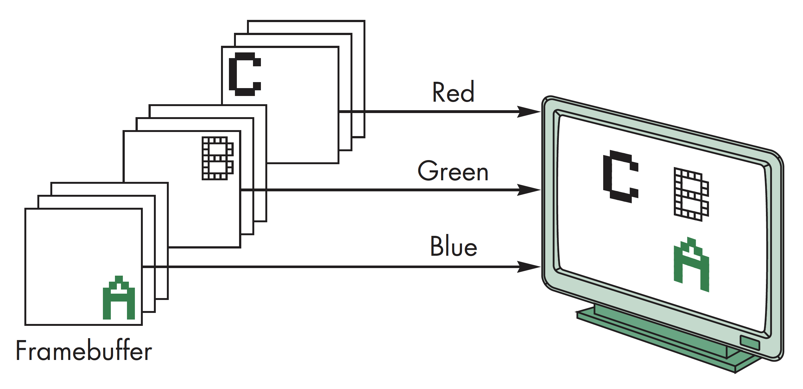
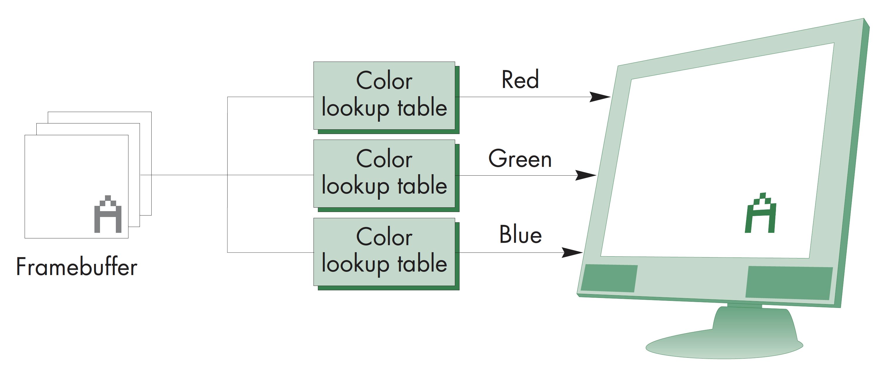

计算机图形学
第二章 图形学编程
颜色和属性
颜色和属性
图元

颜色和属性
图元

颜色和属性
关于多边形
多边形，可定义以下三种属性：
- 简单，即所有的边都不相交
- 凸多边形，连接任意两个多边形顶点的线段上的所有点，均位于多边形内
- 平面多边形，即所有的点都位于同一个平面上
WebGL只渲染三角形，三角形完全具备以上三种属性，是最简单的多边形。若需要渲染多边形，需将多边形分解成若干三角形(三角化)，在OpenGL中支持GL_QUADS，即能够支持这种分解，但在WebGL中不行
颜色和属性
多边形测试
从概念上讲，测试多边形是否是简单多边形，是否是凸多边形虽然简单，实际实现却很耗时，因此在现在的版本实现中只保留了渲染三角形，而将多边形划分成三角形的工作交由用户完成
颜色和属性
三色化
待三角化四边形
"坏"三角化
"好"三角化
颜色和属性
三角化原则
- 避免扁长三角形，即内角为钝角的三角形
- 划分可采用最大化最小角原则
- 对于非结构化点集，可采用Delaunay三角划分
- 所有三角形中，等边三角形的绘制速度最快
颜色和属性
凸多边形三角化
凸多边形三角化，从abc开始，拿掉b，加上acd，拿掉c，加上ade......
颜色和属性
非凸多边形三角化
非凸多边形
非凸多边形分割，从最左边的点开始
颜色和属性
属性
属性决定了物体的外观，包括如下几点:
- 颜色，点、线、多边形的颜色
- 大小和宽度，点的大小，线的宽度
- 线的点画模式，线段和多边形的边界用的实线还是虚线
- 多边形模式，如填充模式，是纯色填充还是阴影填充？是否绘制边框？是否绘制顶点？等等
以上属性在OpenGL中能够得到完整支持，但是在WebGL中只有少部分支持，如gl_PointSize
颜色和属性
RGB颜色
每种颜色分量在帧缓存中都是独立存储，每种颜色各占8位，颜色值用0.0到1.0之间的浮点数表示，对应于非负整型的0到255
颜色和属性
颜色索引
颜色通过索引表查找得到，一般用8位索引，适用于内存空间较少的情况，能够表示的颜色较少，无法满足阴影绘制的需要，现在已较少采用
颜色和属性
颜色平滑
颜色平滑处理默认采用平滑着色(Smooth shading)，在光栅化阶段，在可见的多边形上对顶点颜色进行插值
另一种为平面着色(flat shading)，多边形的颜色由第一个顶点的颜色决定，并在着色器中处理

颜色和属性
设置颜色
颜色是在面片着色器中设置，但其值可以由应用程序或是任一着色器设定
在应用程序中设定颜色，需将颜色值作为常量传递给顶点着色器或作为顶点属性进行传递
在顶点着色器中设定，需将其值作为变量传递给面片着色器
在面片着色器中设定，可通过代码修改